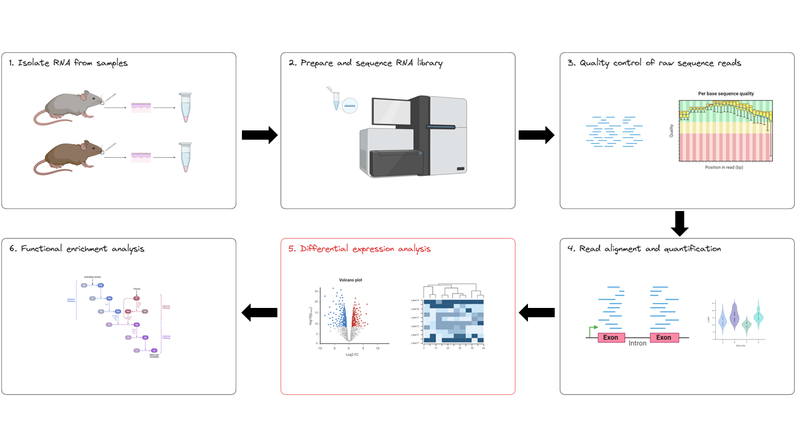

Differential expression analysis in R
- Learn how toperform differential expression analysis with DESeq2 in R.
- Describe the DeSeq() function.
- Visualise differential expression results in R.
We are happy with what we have observed in our exploratory analysis and are finally ready to start differential expression (DE) analysis. We are still at the differential expression analysis stage of our RNAseq experimental workflow:

2.3.1 Differential expression experimental design
In order for DESeq2 to perform DE, we need to revisit the DESeqDataSet object (dds), this time telling it our experimental design. In our case, this will be the column “condition”, taken from “meta”.
Design formulas can be much, much more complex! This gives you the power to model and account for other variation (e.g. you could model batch effects using something like ~ condition + batch)
dds <- DESeqDataSetFromMatrix(countData = counttable,
colData = meta,
design = ~ condition)Let’s stop here and take some time to understand dds. In the console, type in the code below:
ddsNotice dim - can you tell from this how many genes are are analysing?
counts(dds)This extracts the count matrix out of dds.
colData(dds)This extracts our experimental design metadata out of dds.
design(dds)This extracts our design formula out of dds.
2.3.2 Explicitly set the factors levels
When we perform differential expression and interpret the results, we want to see what changed in the knockout mice (“treatment”) compared to the wildtype mice (“control”) - not the other way around!
The experimental design information in dds is stored as a factor in R (check by running class(dds\$condition - without the backslash). By default, R will choose a reference level for factors based on alphabetical order. That means, the knockout group is currently our baseline (check by typing in the console: dds$condition, without the backslash).
The backslashes are required to escape the “$” as they are interpreted differently in Markdown vs R.
We will need to explicitly set “Wild” as the baseline level for easier interpretation of results.
# Set Wild to base level, using relevel
dds$condition <- relevel(dds$condition, "Wild")
# Check that Wild appears as the first level
dds$condition2.3.3 Perform differential expression analysis
Before we commence with DE, there are some key concepts that you should know:
- Each sample is sequenced to a slightly different depth and this needs to be normalised (if we have 60 million reads for sample A but 30 million for sample B, it does not mean that all of sample A’s genes are expressed twice as high!)
- RNA-Seq data count data is distributed in a heteroskedatic manner - in other words, the amount of variance changes with the mean. Lowly expressed genes tend to have a higher read count variance than highly expressed genes. This violates the assumption of most statistical models which assume homoskedatic data. Therefore, the data needs to be transformed.
- Differential expression tests are performed for every single gene. If we use a simple P < 0.05 cut-off value, 1,000 genes will be defined as DE by chance for a species with ~20,000 genes (humans and mice). Therefore, we need to reduce and adjust for multiple testing.
All DE methods account for the above in their own way. In this workshop, we will use and explore DESeq2’s method.
2.3.4 The DESeq() function
We are finally ready to perform DE analysis with DESeq2’s DESeq() function. This performs a number of steps required to perform DE - the console output gives you a clue as to what these steps are doing.
# Perform DE and store the results back in the dds object
dds <- DESeq(dds)
# Save the results to res
res <- results(dds)In brief, by default, DESeq2 is:
- Estimating size factors, required to normalise data. DESEq2 uses the median of ratios method. There are many other normalisation methods, each with their pros and cons.
- Transforming the data by estimating dispersion (DESeq2’s way of quantifying within group variability). DESeq2 uses a negative binomial distribution model.
- Performing independent filtering to reduce the number of statistical tests to perform. DESeq2 will automatically do this. A common method to do this is by removing lowly expressed genes as these don’t have enough data confidently test for DE (DESeq2 actually recommends this to also reduce the size and memory required by DESeq())
2.3.5 Inspect the results
Get a summary of results by running the code below:
summary(res)Order by the smallest adjusted p value, and have a look at the top 5/bottom 5 DE genes.
res <- res[order(res$padj), ]
resFrom the above, we can see that DE was performed for KO vs Wild samples for 19,859 genes and 6 columns (6 samples). We then see a table of DE results. The column headers include:
- baseMean: this is an average of the normalized count values, dividing by size factors, taken over all samples. This gives you a general idea of how many reads were detected over all samples present for any one gene.
- log2FoldChange: This measures the magnitude of differential expression of a gene. A positive value indicates that the KO expression was higher than Wild (remember the fuss about setting factor levels?). This number is on the logarithmic scale to base 2, e.g. log2 fold change of 1.5 means that the gene’s expression is increased by 2^1.5 = 2.82 times.
- lfcSE: this is the standard error of the log2FoldChange estimate
- stat: Wald statistic
- p-value: Wald test p-value
- padj: p-value adjusted for multiple testing. This is sometimes referred to as the false discovery rate or FDR. By default, DESeq2 performs this with the Benjamini Hochberg method. Note - DESeq2 will report “NA” (not available) values if multiple testing was not applied for this gene, usually because the counts for these gene were too low or the gene was an extreme outlier.
2.3.6 Define a significance threshold
Differentially expressed genes are usually defined by cut-offs for two metrics, which are the adjusted p-value and the fold change value. We commonly see differential expression defined as genes with:
- Adjusted p-value of < 0.05 (sometimes < 0.1)
- Fold change of 2 (log2 fold change ~ 1)
This is somewhat arbitrary - we need to have just the right number of differentially expressed genes to perform pathway analysis (around 100 - 3,000 is a general guide). Gene expression should be thought of in a biological context - we care about the “top” most differentially expressed genes.
2.3.7 Subset the data and write out results
Here we will use padj < 0.05 as our cut-off value for significance and use these genes for enrichment analysis.
# Redefine the significance cut-off used for independent filtering (default = 0.1).
# This should be done if we want to use p adj to a value other than 0.1
res_padj0.05 <- results(dds, alpha = 0.05)
# Subset the results and write these to an output file
resSig005_subset<-subset(res_padj0.05, padj < 0.05)
write.table(resSig005_subset,
"res_DeSeq2_FDR0.05_comparison_Wild_vs_KO_FUllMatrix.tab",
sep="\t",
col.names=NA,
quote=F)
# Reformat the output results into a data.frame
resSig005_subset <- data.frame(genes = row.names(resSig005_subset), resSig005_subset)
# We can also order padj-filtered results by log fold change
resSig005_subset_lfc <- resSig005_subset[order(resSig005_subset$log2FoldChange), ]
# Notice how our summary of results has changed slightly now
summary(res_padj0.05)Normalised count data can be used for visualisation/other analyses. The code below extracts and prints normalised counts to file.
# Extract normalized counts from dds
normalised_counts <- counts(dds, normalized = TRUE)
# Save normalized counts (tab separated) to file
write.table(normalised_counts,
"normalised_all_samples_DeSeq2_FUllMatrix.tab",
sep = "\t",
col.names = NA,
quote = F)Normalised count data can be used for visualisation/other analyses, so it is also handy to save these results.
normalised_counts <- counts(dds,normalized = TRUE)
write.table(normalised_counts, "normalised_all_samples_DeSeq2_FUllMatrix.tab", sep = "\t", col.names = NA, quote = F)2.3.8 Visualise the results
Volcano plot
The volcano plot is a scatterplot that shows magnitude of change (fold change, x axis) against statistical significance (p-value, y axis). It provides an overall visual snapshot of the number of up and downregulated genes that are statistically significant.
# Create a basic volcano plot (scatter plot) with x axis = LogFC, y axis = -log10(pvalue)
resdata <- as.data.frame(res)
# Define whether genes are significantly DE or not and store this in a new column called DE
resdata$Significant <- "No"
resdata$Significant[resdata$log2FoldChange > 1 & resdata$pvalue < 0.05 ] <- "Upregulated"
resdata$Significant[resdata$log2FoldChange < -1 & resdata$pvalue < 0.05 ] <- "Downregulated"
# Create the volcano plot
p <- ggplot(data=resdata,
aes(x=log2FoldChange, y=-log10(pvalue), col=Significant)) + geom_point()
# Add significance lines at log2FoldChange -1, 1 and pvalue 0.05
p2 <- p + geom_vline(xintercept = c(-1, 1), col = "red") +
geom_hline(yintercept = -log10(0.05), col = "red")
# Print the plot
p2Visualise some DE genes
We have applied low read-count filtering followed by appropriate statistical tests using the DESeq2 package for identification of the differentially expressed geens across our conditions of interest.
However we recommend that you visualise a few genes (of specific interest or otherwise) to check if the identification of these genes is supported by sufficient read-counts.
Use plotCounts function to plot normalized counts for a single gene of interest. Here we plot
plotCounts(dds,
gene = "Dip2b",
intgroup = "condition")Choose a significant gene that is downregulated in the knockout mice. Enter the plotCounts code in the grey box below to plot the normalized counts for each sample for the gene you have chosen.
Why should we observe the expressions of DE genes before shortlisting them for experimental validation?
- Big fold changes (and high significance - indicated by low Padj) can be of importance
- Borderline significance can be due to high variance b/w replicates
- Sometime one of the samples in a small cohort can be an outlier
Diagnostic plots
Before we get too excited about our results, we need to confirm that DESeq2’s assumptions were met and that statistical analysis was performed appropriately. We will explore a few plots and concepts to better understand what is happening under the hood.
MA plot
The MA plot provides an overview of the relationship between significantly differentially expressed genes, gene expression and log fold change in the form of a scatter plot. Each dot on the plot represents a single gene, significant genes are coloured as a blue dot. The average gene expression is on the x axis (expressed as a mean of normalized counts) and the log fold change is on the Y axis.
# There is another R function called plotMA, so we need to specify to use DESeq2's plotMA
DESeq2::plotMA(res, ylim = c(-12, 12))There are a few things we notice:
- Genes that are differentially expressed will appear as points deviating significantly from the centerline, with those above the line indicating upregulated genes and those below indicating downregulated genes.
- Genes with a lower mean expression have higher variable log fold changes (heteroskedatic - as we expected)
- Gene expression is symmetrical around log fold change 0
Histogram of P-values
Remember that for every gene, we perform a statistical test to determine whether gene expression is significantly different in the knockout samples, compared to the wildtype. This results in thousands (~20,000 genes in the mouse genome) of p-values. We can look at the histogram of p-values to see how our well our statistical test behaves before we apply correction for multiple testing.
# Bin frequency of p-value counts by 0.05 incremets (i.e plot 20 columns from p-value of 0 to 1)
hist(res$pvalue,
breaks = 20,
col = "grey")A nice histogram of p-values will have a peak at the 0.05 end, and a uniform frequency at all other p-value bins. Think back to your null and alternate hypothesis. Under the null hypothesis, there is a 5% chance of genes will fall under p-value 0.05, 10 % for p-value under 0.1, etc. The high peak at the first bin (p-value 0 - 0.5) represents genes that reject the null hypothesis (in addition to all the false discoveries - hence our need to adjust for multiple testing!).
A histogram of p-values that looks anything other than what is described above means that something weird has happened and you may need to contact your local statistician/bioinformatician.
This blog post has a nice explanation of each scenario if you want to explore this further.
Additional plots
Dispersion estimates
The dispersion plot is useful to examine whether your data is meeting DESeq2’s assumptions around heteroskedasticity and that the data fits DESeq2’s model well. Dispersion is how DESeq2 quantifies variability in the data. It considers variance and mean expression within each experimental group.
Let’s use plotDispEsts() to generate the dispersion plot and discuss what this means.
# Plot dispersion estimates using dds
# Note - we have set our experimental design to ~ condition and it is using this to estimate dispersion
plotDispEsts( dds)There are a few things to note:
- Dispersion is higher for genes with small mean of normalized counts, and lower for genes with high mean of normalized counts.
- If you see any other trend, this is a sign that you should not trust DESeq2’s results and that you need to investigate further
- To transform the data, we need to use the variation observed within each experimental group. We cannot do this accurately with few biological replicates (e.g n =3 for KO, n = 3 for wildtype).
- DESeq2 assumes that genes with similar expression have a similar level of dispersion to get a more accurate estimation of variability - one of its many benefits! A model (the red curve) is calculated by DESeq2 with this information, using a method called shrinkage.
- In other words, the red line represents the expected dispersion for any given level of expression
- The black dots represent each gene and their own dispersion (using within group variance as described above)
- The gene-wise dispersion estimate (black dots) need to be shrunken towards the red line. This helps to reduce false positive results in our differential expression analysis
There is a lot happening here, but the main point is that our dispersion plot looks as expected and plots should generally appear like this. Check this website for a deeper explanation of this concept, and for examples of what bad dispersion plots look like.
2.3.9 Experimental validation
It is generally a good practice to validate differentially expressed genes (DEGs) experimentally after identifying them through high-throughput techniques such as RNAseq. Validating DEGs experimentally helps confirm the reliability of the computational analysis and provides biological context to the results. qPCR is a widely used technique to validate gene expression changes. It allows for the accurate measurement of the expression levels of specific genes and can confirm whether the observed differences in gene expression are consistent with the computational analysis.
- We need to normalise our DE data to account for differences in sequencing depth between samples.
- We need to transform our data to make sure we don’t violate the assumptions of statistical models we’re applying.
- We need to account for multiple testing, as we are performing a DE test for every gene.
- Gene expression should be thought of in its biological context, consider this when defining your significance threshold.
- Visualising our results can aid our interpretation and confirm the statistical assumptions have been met.
The object class used by the DESeq2 package to store the read counts and the intermediate estimated quantities during statistical analysis is the DESeqDataSet.